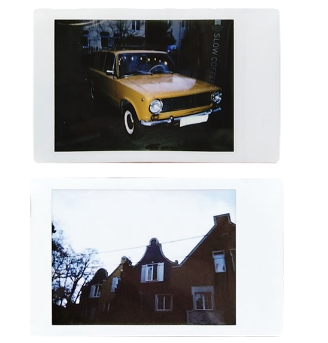
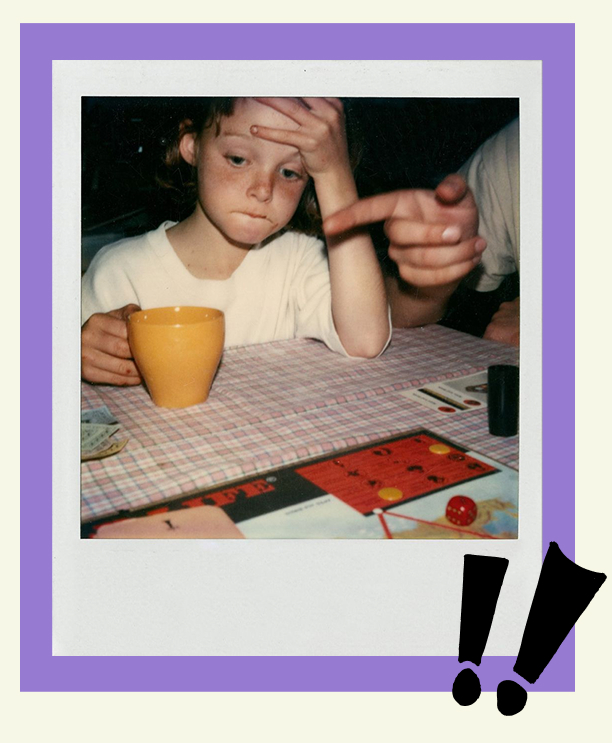
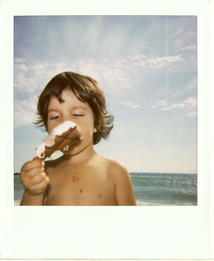
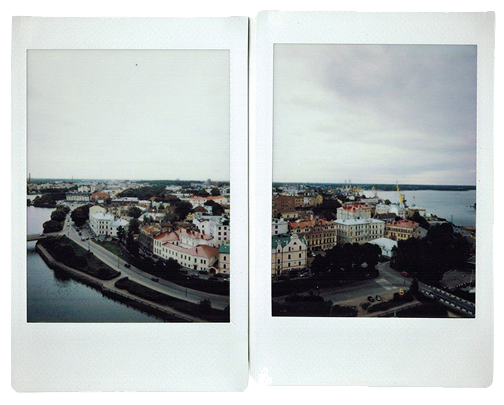

VINDEREN AF INSTANT UGEN
TITEL: Genslag i ludo
FOTOGRAF: Henning V. Sørensen
HISTORIEN BAG BILLEDET:
En regnfuld søndag eftermiddag i oktober
Scroll ned for de nominerede & inspiration

DE NOMINEREDE

TITEL: Smagen af august
FOTOGRAF: Teddy K. Berg
HISTORIEN BAG BILLEDET: En lille dreng kæmper ivrigt mod sommervarmen ved vesterhavet, mens hans flødeis smelter hurtigere,end han kan nå at spise den
Instant Ugen var noget af en succes med over 300 bidrag. Så det var ikke nemt at finde en vinder. Efter et par lange, men spændende dage, blev dommerne enige om vinderen og de 3 nominerede.
INSPIRATION
Tag et kig på følgende instant fotos for inspiration. Du kan også få en masse inspiration fra kunstfotografi-scenen.
